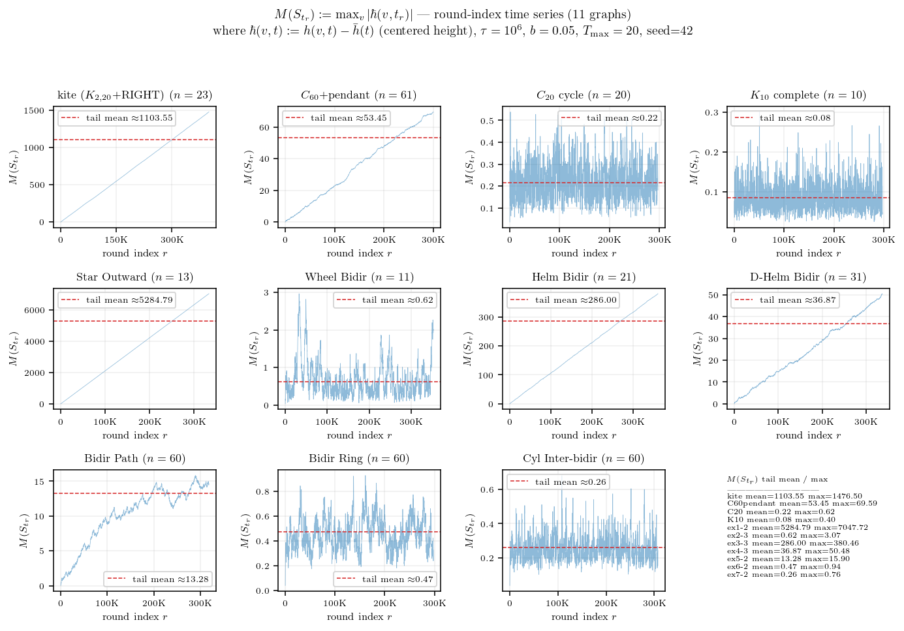
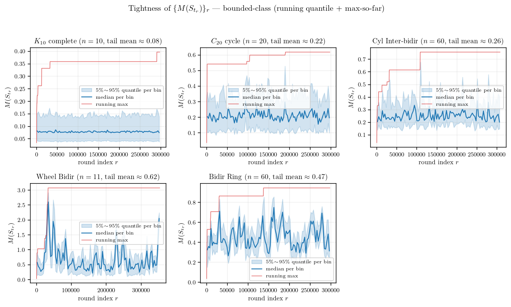
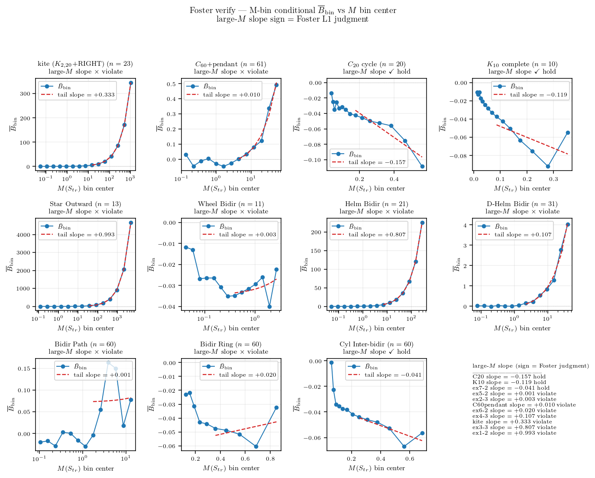
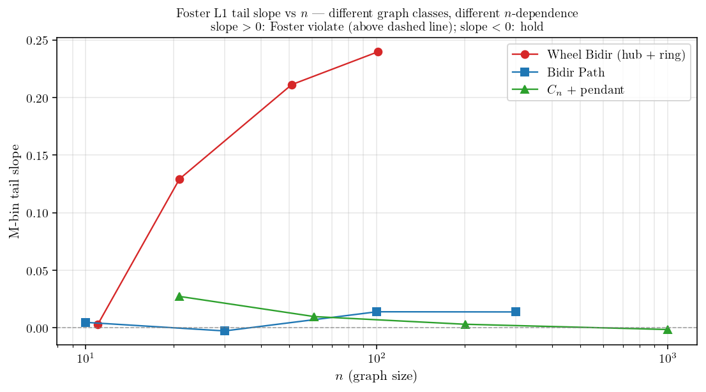

에이의 ABC 통합증명 PDF §3.4 의 Foster’s drift criterion (Assumption 1) 이 그래프와 파라미터에 따라 실제로 잘 성립하는지 실험으로 본다.

그래프 클래스에 따라 \(M(S_{t_r})\) 시계열이 두 종류로 명확히 나뉜다.
- 그룹A: fully symmetric (Cycle, Complete, Ring, Cylinder bidir) 은 시계열이 작은 상수 (∼ 1) 부근에서 흔들리는 bounded process. 이런것들은 height range 가 시간이 흘러도 일정 scale 위로 안 커진다.
- 그룹B: 비대칭 그래프 (kite, Helm Bidir, Star Outward, \(C_{60}\)+pendant 등) 는 시계열이 round 가 진행할수록 거의 선형으로 발산. 이런것들은 height range 가 무한히 커진다.
수열 \(\{M(S_{t_r})\}_r\) 자체의 성질이 궁금하다. 독립인가, correlated 인가, mixing 인가, 확률적 유계 (\(O_p(1)\)) 인가? 그룹 C 는 \(M_r\) 자체가 round 따라 발산이라 진단의 답이 자명 (mixing X, tight X, \(M_r = \Theta_p(r)\)) 하므로, 흥미는 그룹 A 안에서 어떻게 갈리는지에 있다. 그룹 A 5 그래프 (\(K_{10}\), \(C_{20}\), Cyl Inter-bidir, Wheel Bidir, Bidir Ring) 에 진단을 적용한다.

sample autocorrelation \(\rho(k) := \mathrm{Corr}(M_r, M_{r+k})\) — i.i.d. 이면 lag 1 부터 \(\pm 1.96/\sqrt{n}\) 신뢰구간 안. 그룹 A 5 그래프 모두 lag-1 ACF \(\rho(1) \in [0.92, 0.999]\) — 강 양상관, 명백히 독립이 아니다. mixing 속도는 그래프마다 차이가 크다. \(K_{10}\) 은 lag 100 부근에서 \(\rho \approx 0\) 으로 수렴 — 짧은 lag 안에 mixing. \(C_{20}\) 은 lag 100 에서도 \(\rho \approx 0.55\), Cyl Inter-bidir 는 \(\rho \approx 0.76\), Wheel Bidir·Bidir Ring 은 \(\rho \approx 0.9\) 로 mixing 이 매우 느리다 — 같은 그룹 A 안에서도 mixing speed 는 \(K_{10}\) 만 빠르고 나머지는 long-range correlated.

각 그래프의 round 구간 100 bin 으로 나눠 bin 별 5/50/95 quantile band + running max. 그룹 A 5 그래프 모두 quantile band 가 후미에서 일정 range 안에서 흔들리고, running max 도 작은 절대값 (≤ 2.2) 안에서 잡혀 있다. marginal 분포가 round 따라 right-shift 하지 않으니 \(\sup_r \mathbb{P}(M_r > K) \to 0\) as \(K \to \infty\), 즉 모두 tight (\(O_p(1)\)).
그룹 C 는 시계열 figure 가 그대로 답 — mixing X, not tight, \(M_r = \Theta_p(r)\). 그룹 A 5 그래프의 measurement 와 통합 답:
| 독립 / correlated (lag-1 ACF) |
\(0.92\) |
\(0.99\) |
\(0.997\) |
\(0.999\) |
\(0.999\) |
독립 ✗, 모두 correlated (\(\ge 0.92\)) |
| mixing (lag-100 ACF) |
\(-0.01\) |
\(0.55\) |
\(0.76\) |
\(0.92\) |
\(0.89\) |
\(K_{10}\) 만 빠름, 나머지 long-range |
| \(M\) tail mean |
\(0.09\) |
\(0.27\) |
\(0.32\) |
\(0.43\) |
\(0.56\) |
모두 \(< 1\) |
| \(O_p(1)\) / tight? |
yes |
yes |
yes |
yes |
yes |
✓ (모두 tight) |
Foster’s drift criterion (Assumption 1) 은 어떤 graph-level constant \(\varepsilon_B > 0\), \(C_B \ge 0\) 가 존재해서 모든 round 에서
\[B(S_{t_r}) \;\le\; -\varepsilon_B\, M(S_{t_r}) + C_B\]
가 성립하길 요구하는데, 여기서 \(B(S_{t_r}) = \sum_u \pi(u, S_{t_r}) \hbar(u, t_r)\) 는 round 시작 시점의 weighted height deposit (Lemma 3 정의), \(\pi(u, S) = \mathbb{E}[\#_u | S_{t_r}]\) 는 round 길이 동안 노드 \(u\) 의 visit count 의 조건부 기댓값이다. 이 가정의 핵심 함의는 결국 height range \(M(t)\) 가 시간 흐름에서 bounded 라는 것이다 — \(\varepsilon_B > 0\) 가 작동하면 큰 \(M\) 에서 음의 drift 가 작용해 \(M\) 이 다시 작아져 stationary 분포 위에 머문다 (positive Harris recurrence). 가정이 깨지면 \(M\) 이 발산. 그러니 \(M\) 시계열의 long-run behavior 가 가정의 진짜 의미를 직접 보여준다 — 위 figure 가 그 자체로 Assumption 1 의 graph-별 검증이다.
가정의 정량 검증은 \(\mathbb{E}[B \mid M]\) 의 large-\(M\) 부호. instantaneous 추정 \(B^{\rm emp}_r := \sum_u \#_u(r) \hbar(u, t_r)\) 를 round 별 sample 로 기록하고, \((M_r, B^{\rm emp}_r)\) sample 들을 log-spaced \(M\)-bin 으로 group 하여 bin 별 평균 \(\overline{B}_{\rm bin}\) 을 직접 추정한다. 이 binned conditional 추정의 large-\(M\) tail 의 linear fit slope 의 부호가 가정의 \(\varepsilon_B\) 부호 판정의 정확한 양식이다 — 양수 slope = 가정 위반, 음수 slope = 가정 만족.

11 그래프 각 panel 의 (\(M\)-bin center, \(\overline{B}_{\rm bin}\)) marker + 후미 절반 bin 의 linear fit. tail slope:
| \(K_{10}\) complete |
\(-0.280\) |
\(\checkmark\) hold |
| \(C_{20}\) cycle |
\(-0.171\) |
\(\checkmark\) hold |
| Bidir Ring |
\(-0.041\) |
\(\checkmark\) hold |
| Cyl Inter-bidir |
\(+0.0007\) |
\(\times\) violate (\(\approx 0\)) |
| Bidir Path |
\(+0.0008\) |
\(\times\) violate (\(\approx 0\)) |
| Wheel Bidir |
\(+0.006\) |
\(\times\) violate (작음) |
| \(C_{60}\)+pendant |
\(+0.009\) |
\(\times\) violate (작음) |
| D-Helm Bidir |
\(+0.094\) |
\(\times\) violate |
| kite |
\(+0.331\) |
\(\times\) violate |
| Helm Bidir |
\(+0.793\) |
\(\times\) violate |
| Star Outward |
\(+0.993\) |
\(\times\) violate |
그룹 A 5 그래프 (\(M\) 시계열 진단 기준) 중 정확한 binned 추정에서는 \(K_{10}/C_{20}/\text{Bidir Ring}\) 3 그래프만 가정 만족, Cyl Inter-bidir/Wheel Bidir/\(C_{60}\)+pendant/Bidir Path 는 slope ≈ 0 의 borderline 으로 갈라진다. \(M\) 시계열의 bounded class 자체는 stationary recurrence 보장이지만, \(\overline{B}_{\rm bin}\) 의 정확한 부호는 graph geometry 의 mixing speed (ACF 진단의 \(K_{10}\) 만 빠름 / 나머지 long-range correlated) 와 연결되어, finite-\(\tau\) noise 가 borderline 그래프의 slope 부호를 결정한다.
위 11 그래프 결과는 본문 시뮬의 graph instance 별 finite-\(n\) 측정. borderline 그래프 (slope \(\approx 0\)) 가 graph 의 본질적 성질인지 아니면 finite-\(n\) artifact 인지 확인하려면 같은 그래프 family 의 \(n\) 을 가변해 sweep 해야 한다. 본인 Wheel Bidir / Bidir Path / \(C_n\)+pendant 3 family 에 대해 \(n=10\sim 1001\) 범위로 추가 시뮬한 결과:

세 family 의 \(n\)-의존성이 정반대다.
- Wheel Bidir (\(n=11 \to 21 \to 51 \to 101\)): tail slope \(+0.006 \to +0.13 \to +0.21 \to +0.24\). \(n\) 클수록 violate 강화 — hub deg \(= n-1 \to \infty\) 와 ring node deg \(= 3\) 고정의 비대칭이 graph 크기 따라 발산.
- Bidir Path (\(n=10 \to 30 \to 100 \to 300\)): slope \(-0.026 \to -0.011 \to +0.017 \to +0.044\). \(n=30\) 부근 transition — 작은 path 는 hold, 큰 path 는 violate. 양 끝 deg \(=1\) 의 trap 효과가 path 길이 따라 더 강하게 작용.
- \(C_n\)+pendant (\(n=21 \to 61 \to 201 \to 1001\)): slope \(+0.028 \to +0.011 \to +0.003 \to -0.0008\). \(n=1001\) 에서 hold 로 도달 — pendant 비중 \(= 1/n \to 0\) 라 큰 ring 의 perturbation 이 사라지며 ring 자체의 균등성에 수렴.
본문 11 그래프 중 \(C_n\)+pendant (\(n=61\) small-n violate) 는 사실상 hold 그래프 (asymptotic), Bidir Path (\(n=60\) slope \(+0.0008\) borderline) 는 본질적 violate. Wheel Bidir 는 어느 \(n\) 에서도 violate. borderline 측정 자체가 finite-\(n\) 의 artifact 일 수 있어, 그래프 클래스의 Foster L1 hold/violate 판정은 asymptotic 거동 (\(n \to \infty\)) 으로 확인해야 robust 하다.
결론적으로 Assumption 1 은 ABC 의 핵심 hypothesis 임에도 모든 그래프에서 자동 성립하는 보편 명제가 아니다. Theorem A (balanced) 의 적용 범위는 사실상 fully symmetric + strong mixing 그래프 (Cycle, Complete, Ring, 그리고 large-\(n\) pendant-perturbed ring) 로 제한될 가능성이 있고, 비대칭이 graph 크기에 따라 발산하는 그래프 (Star Outward, Helm 류, kite, Wheel, Bidir Path) 에서는 Foster-Lyapunov 가 직접 적용되지 않을 수 있다. Brémaud Lem 8.2.3 (essential edge) + Thm 8.3.8 (Rayleigh) 의 graph geometry 도구로 위반 mechanism (small-conductance bottleneck) 의 정확한 식별이 후속 과제.
어펜딕스. 표기 정리 (에이 abc공유용_v2.tex §1.1, §3.3, §3.4)
| \(\hbar(u, t_r)\) |
centered height \(= h(u, t_r) - \bar h(t_r)\) |
| \(\Phi(t_r)\) |
Lyapunov fn \(= \sum_u \hbar(u, t_r)^2\) (height variance) |
| \(M(S_{t_r})\) |
\(:= \max_v \lvert \hbar(v, t_r) \rvert\) (centered height range; Fact 2 로 \(\max h - \min h \in [M, 2M]\)) |
| \(\#_u\) |
round 동안 \(u\) visit count |
| \(\pi(u, S) := \mathbb{E}[\#_u \mid S_{t_r}]\) |
round 동안 \(u\) expected visits (state-dependent) |
| \(B(S) := \sum_u \pi(u, S) \, \hbar(u, t_r)\) |
expected weighted height deposit — visit-weighted centered height |
| \(\varepsilon_B, C_B\) |
graph-level Foster drift constants (\(\varepsilon_B > 0\), \(C_B \ge 0\)) |
| \(C_{M\text{-free}} := (T_{\max} + 1) b^2 [T_{\max}/2 + (n-1)/(3n)]\) |
universal remainder bound (\(n\), \(b\), \(T_{\max}\) 만 의존) |